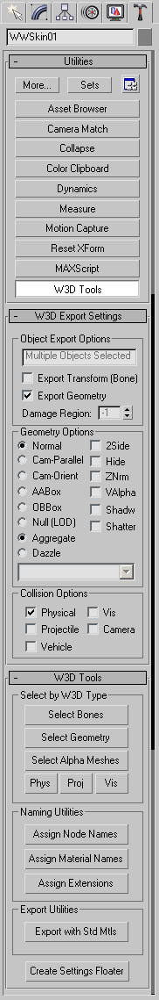

<!DOCTYPE HTML PUBLIC “-//W3C//DTD HTML 4.0 Transitional//EN”>
3DSMax W3X Exporting Utilities
Each object in the Max scene that is not hidden will be
considered for export. A utility plugin is used to set the export options. Each
mesh can have its transform exported for the animation system and/or its
geometry exported. This separation exists due to the way the motion capture
data comes into the system. There are often meshes in the system which are only
there to provide transforms and vice-versa; there are meshes that are rigidly
connected to those "transform-only" meshes. The exporter basically allows you
to reduce the number of transforms that have to be calculated by the animation
system.
Each object that is exported will have its name associated with
it. One limitation of the w3x file format is that these names be 15 characters
or less. If you try to use a longer name, it will be truncated when it is
exported. If two objects with the same name are loaded, only the first object
will be kept.
 I'ts a good
idea to configure your button sets, in the utilities panel in max, to display
it by default. This way, you wont have to look under the "more" section
everytime you want to use it.
I'ts a good
idea to configure your button sets, in the utilities panel in max, to display
it by default. This way, you wont have to look under the "more" section
everytime you want to use it.
Here is a description of the various tools associated with
exporting your selections to W3X.
| Object Export Options: | General Export Options |  |
| Selection Window: | Displays the name of what you have selected. | |
| Export Transform (Bone): | Check this to only export a bone or animation. | |
| Export Geometry: | Check this to only export a mesh or geometry. | |
| Damage Region: | Obsolete: For E & B it was a labor intensive way of defining what part of an object will recieve damage. | |
| Geometry Options: | These options allow your exported geometry to have different characteristics. You can select multiple options from choices on the right. | |
| Normal | Default mode, just a normal mesh with no specific characteristics. | |
| Cam-Parallel | Aligns the object to the near clipping plane of the camera, for example, if an object moves around the scene, it will remain parralell to the viewport. Kind of like a strafing effect. | |
| Cam-Orient | Aligns to the local X axis of the Camera: This makes the object always face torward the camera so where ever the object or camera is, the camera will always be facing the x-axis. | |
| AABox | This mesh is to be used as an axis aligned collision box. | |
| OBBox | Use this if youre exporting a bounding box area. Checkmark "Hide". | |
| Null (LOD) | Indicates that its an LOD object | |
| Aggregate | Export a box that will be used as an aggregate, Checkmark "Hide" when selecting this option. | |
| Dazzle | Use this option to export a mesh object (usually a plane) that will be used as a Camera lens flare. Check mark-2Side. | |
| 2Side | Enable/Disable two sided rendering for the entire mesh. | |
| Hide | Use this option to make your geometry hidden, e.g. a bounding box. | |
| ZNrm | Disabled: | |
| VAlpha | With this checked, your mesh will have a "vertex alpha", which is created from the grayscale values of the vertices that you have given to them in max. NOTE: texture blend mode must be "Alpha Blend" in order for this to work. | |
| Shadw | The mesh is not rendered normally, it is used to generate shadows only. | |
| Shatter | For use when your objects may need to shatter, such as glass. | |
| Collision Options: | You can select the physical characteristics for your geometry that you are exporting. | |
| Physical | Select this for a surface thats not penetrateable, such as a character or a vehicle. | |
| Projectile | Select this if a projectile can hit it. | |
| Vehicle | Select this if you wish a vehicle not to proceed through or past it. | |
| Vis | Select this when exporting your "Vis" areas. A vis area is a specific area within the cameras view, where the computer will not draw in geometry past that point until you crossed over into another Vis area. | |
| Camera | Select this in case you dont want the camera to go through it, or get stuck in it. | |
| Select by W3D Type: | Rather than Manually selecting objects in your scene to be exported, you can use these buttons select specific items for you. | |
| Select Bones | Selects all the bones in your scene. | |
| Select Geometry | Selects all the geometry in you scene. | |
| Select Alpha Meshes | Select all Alpha Meshes in your scene. | |
| Phys | Select all Physical Objects in your scene. | |
| Proj | Select all objects that are affected by projectiles in your scene. | |
| Vis | Select all Vis objects in your scene. | |
| Naming Utilities: | A convenient way to name a selected set. | |
| Assign Node Names | Opens the
"Generate Node Names" window. This allows you to assign a root name, prefix and
suffix. After setting your preferences, all of the selected objects in
your scene will be renamed in sequence according to the node name.
Artist Note: You may want to de-select "Assign Collision Bits" because it will override what you already have selected, in the collision options box. |
|
| Assign Material Names | Opens the "Generate Material Names" window. This allows you to assign a root name to your materials, After setting your preferences, all of the materials you affected will be renamed in sequence according to the node name. | |
| Assign Extensions | This will append an extenstion to your currently selected objects. LOD 0 should be your highest poly model, with increasing LOD numbers going to your lower poly models. Damage models should be extension numbers 1 and up. | |
| Export with Std Mtls: | For use when exporting LightScape files. | |
| Create Settings Floater: | For convenience, this pens a pop up floater with the W3D settings. | |